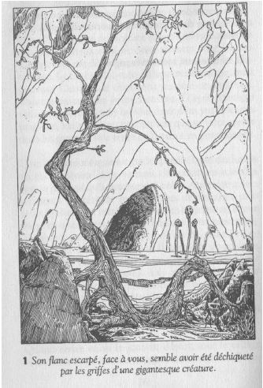

Pour sauvegardez votre progression Cliquez ci-dessous Pour Télécharger le framework cliquez ici.
Content and additional software and design © 2010 IDM.
Created with Undum.
Rumeurs
Seul un aventurier téméraire entreprendrait une quête aussi périlleuse
sans avoir préalablement essayé de savoir le plus de choses possibles
sur la montagne au sommet de feu et ses trésors. Avant d'arriver au pied
de la montagne, vous avez passé plusieurs jours avec les habitants d'un
village des environs qui se trouve à deux jours de marche. Comme vous
êtes sympathique, vous n'avez pas eu de difficultés à vous faire des
amis parmi les paysans du coin. Bien qu'ils vous aient raconté
beaucoup d'histoires au sujet du mystérieux sanctuaire du sorcier, vous
ne pouvez pas avoir la certitude que tous ces récits - ni même un seul
d'entre eux - se fondent sur des faits réels. Les villageois ont vu passer
de nombreux aventuriers qui s'en allaient vers la montagne, mais très
peu en sont revenus. C'est un voyage extrêmement dangereux, voilà au
moins quelque chose dont vous êtes sûr. Parmi ceux qui ont reparu au
village, il n'en est pas un seul qui ait envisagé de retourner dans la
montagne au sommet de feu.
Il semble qu'il y ait quelque vérité dans la rumeur selon laquelle le
trésor du Sorcier serait enfermé dans un coffre somptueux doté de deux
serrures dont les clés sont gardées par diverses créatures à l'intérieur
des souterrains. Le Sorcier lui-même disposerait d'un puissant pouvoir.
Certains le décrivent comme un vieillard, d'autres comme un jeune
homme. D'après certains villageois, son pouvoir lui viendrait d'un jeu
de cartes magique, mais d'autres prétendent que sa force réside dans les
gants de soie noire qu'il porte en permanence.
L'accès à la montagne est gardé, paraît-il, par des lutins au visage
constellé de verrues, des créatures stupides qui ne pensent qu'à manger
et à boire. A mesure qu'on avance à l'intérieur, les créatures deviennent
plus redoutables. Pour atteindre les salles intérieures, il faut franchir
une rivière. Il y a un bac qui la traverse régulièrement, mais le passeur,
à ce qu'on dit, tient à recevoir le prix de ses services, et il convient donc
de se munir d'une Pièce d'Or pour le voyage (inscrivez-la sur votre
Feuille d'Aventure). Les gens du cru vous conseillent également de
dresser une bonne carte au fur et à mesure de vos déambulations, car
sans cela vous seriez irrémédiablement perdu au coeur de la montagne.
Quand arrive enfin le jour du départ, tout le village vient vous souhaiter
un voyage sans encombre. Beau-coup de femmes, ainsi que des enfants
et des vieillards, ont la larme à l'oeil. Vous ne pouvez vous empêcher de
vous demander si ce ne sont pas des larmes de tristesse versées par des
yeux qui ne vous reverront plus jamais vivant...
Et maintenant, tournez la page !
Vous vous étirez, vous vous frottez les yeux, puis vous levez votre regard vers la montagne au sommet de feu. La montagne elle-même paraît menaçante. Son flanc escarpé, face à vous, semble avoir été déchiqueté par les griffes de quelque créature gigantesque. Il est hérissé d'à-pics rocheux aux angles tranchants dont on a peine à croire qu'ils aient été façonnés par la nature. Au sommet, on aperçoit une couleur d'un rouge sinistre - sans doute l'effet d'une étrange végétation - qui a donné son nom à la montagne. Personne, peut-être, ne saura jamais ce qui pousse là-haut, car il est certainement impossible d'escalader ce pic. Votre quête commence maintenant. De l'autre côté de la clairière, il y a l'entrée d'une caverne sombre. Vous ramassez votre épée, vous vous relevez et vous pensez à tous les dangers qui vous attendent. Puis, avec détermination, vous remettez l'épée dans son fourreau et vous vous avancez vers l'entrée de la caverne. Vous jetez un coup d'oeil dans les ténèbres et vous apercevez des parois suintantes et sombres ainsi que des flaques d'eau sur le sol de pierre. L'air est froid et humide. Vous allumez votre lanterne et vous faites prudemment quelques pas dans l'obscurité. Des toiles d'araignées vous balaient le visage et vous entendez le bruit que font sur le sol des pattes minuscules ; ce sont probablement des rats qui prennent la fuite. Vous entrez dans la caverne. Après avoir parcouru quelques mètres, vous arrivez à une bifurcation. Irez-vous vers l'ouest ou vers l'est ?